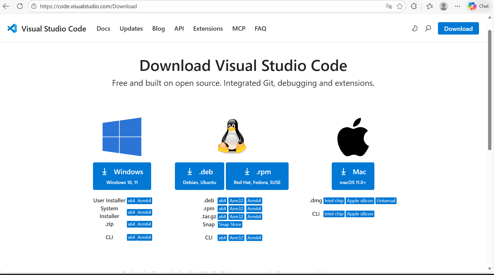
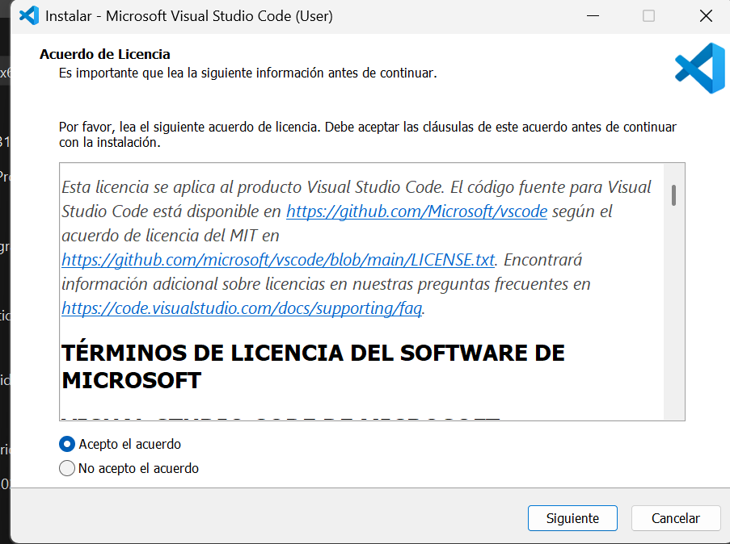
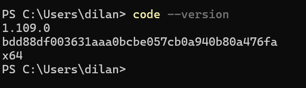
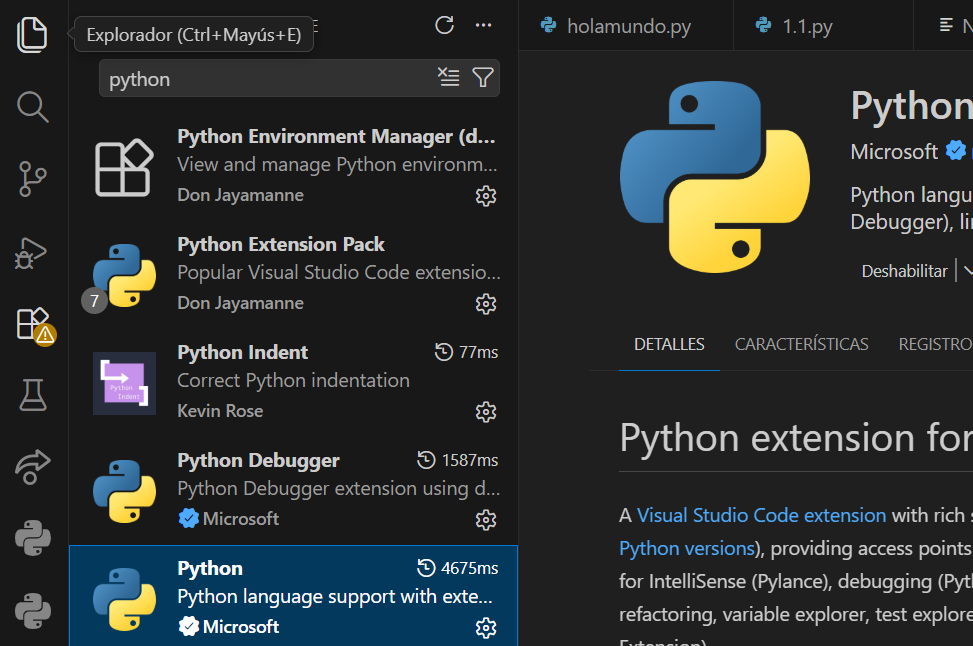

VS CODE
Cheat Sheet – Instalación y Uso Básico
Descarga
- Ir a:
code.visualstudio.com - Clic en Download
- Elegir sistema operativo

Instalación Windows
- Ejecutar
.exe - Marcar:
- Add to PATH
- Open with Code
- Install → Finish

Verificar
- Abrir
cmd - Escribir:
code --version

Extensiones Clave
- Python
- C/C++
- Live Server
- GitLens
- Prettier
